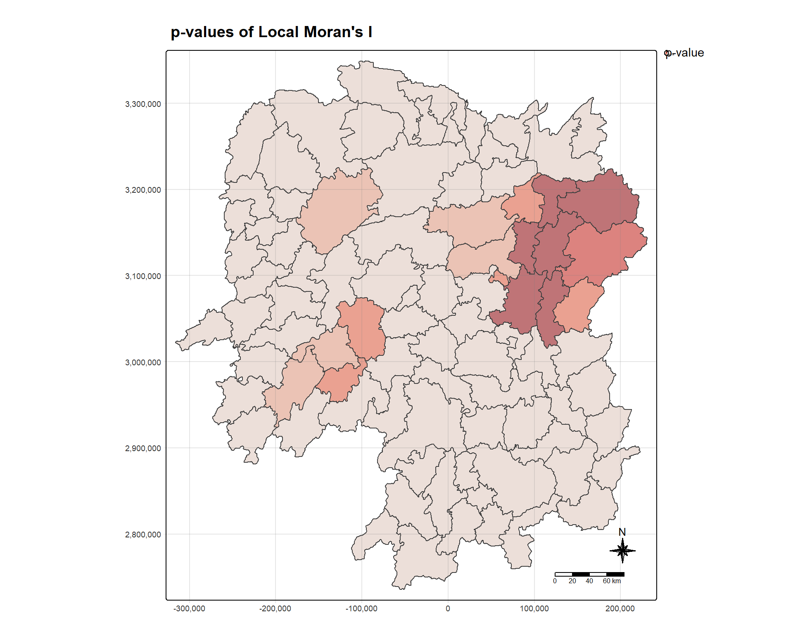
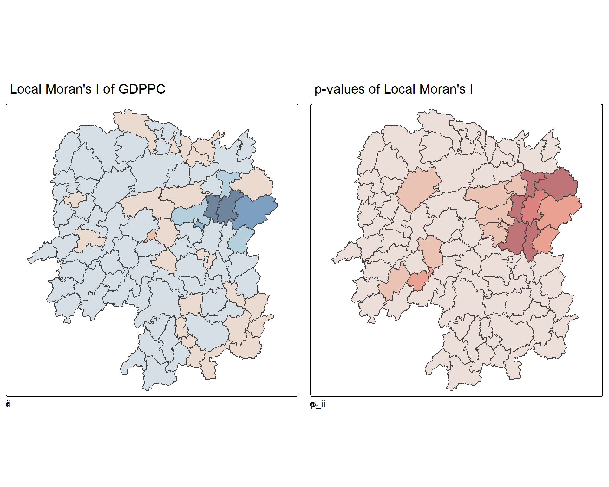
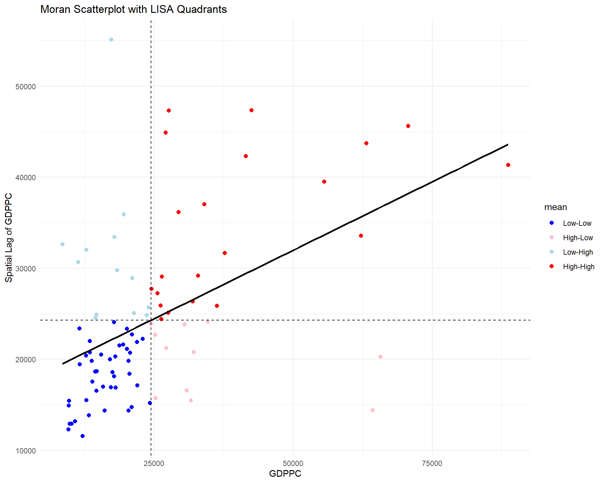
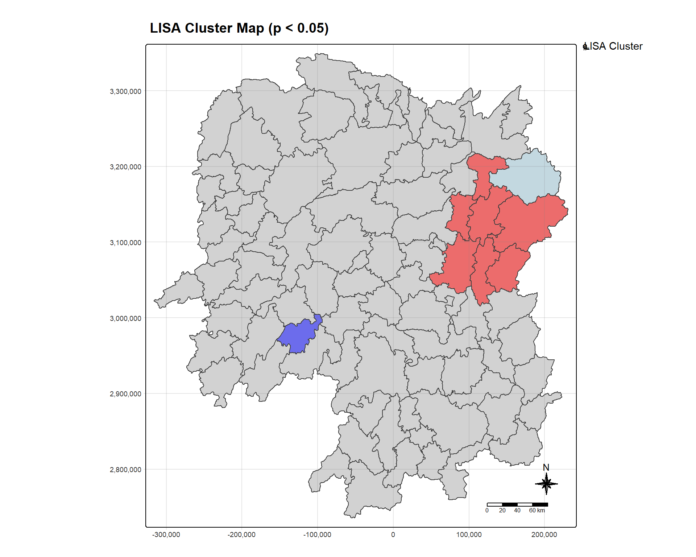
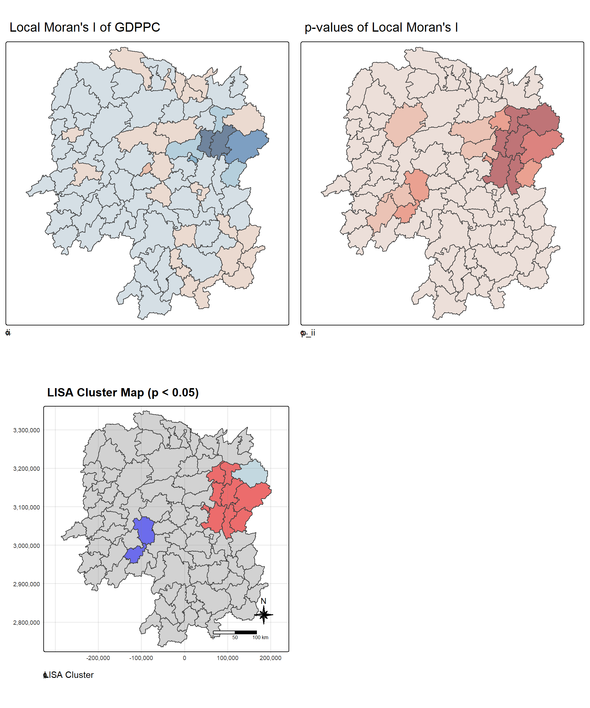
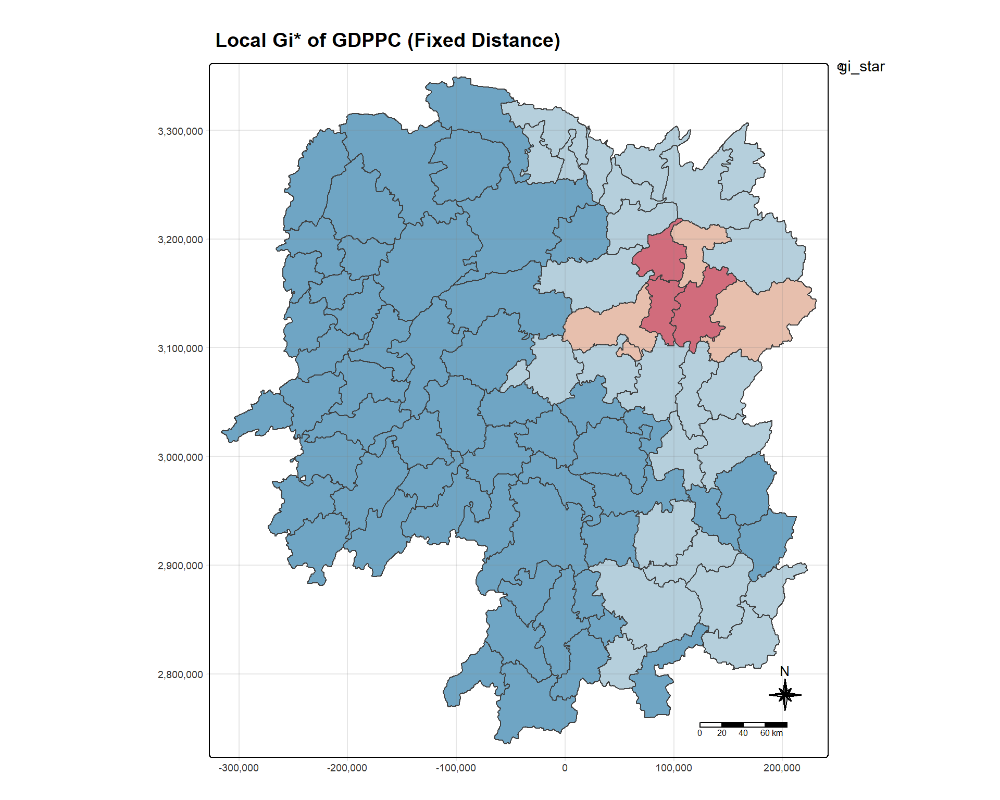
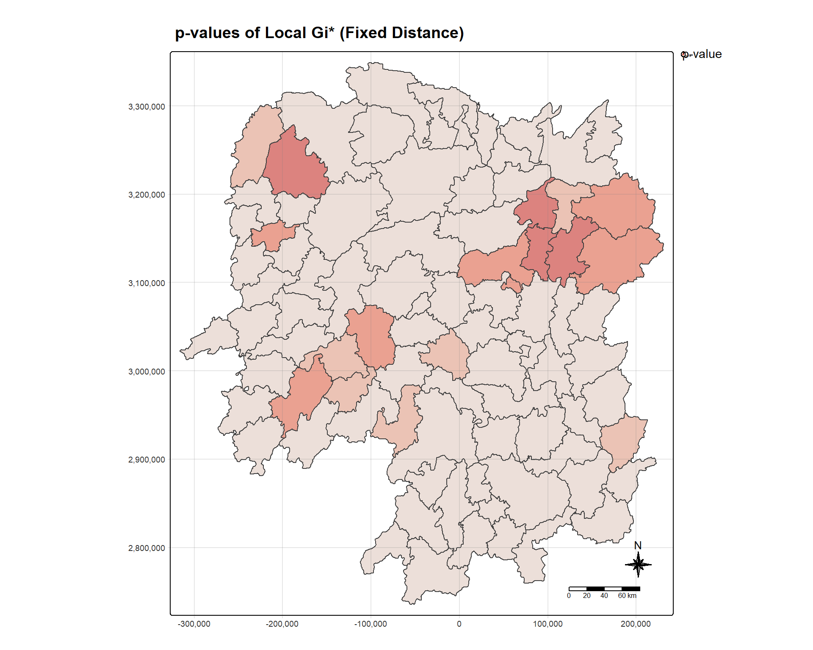
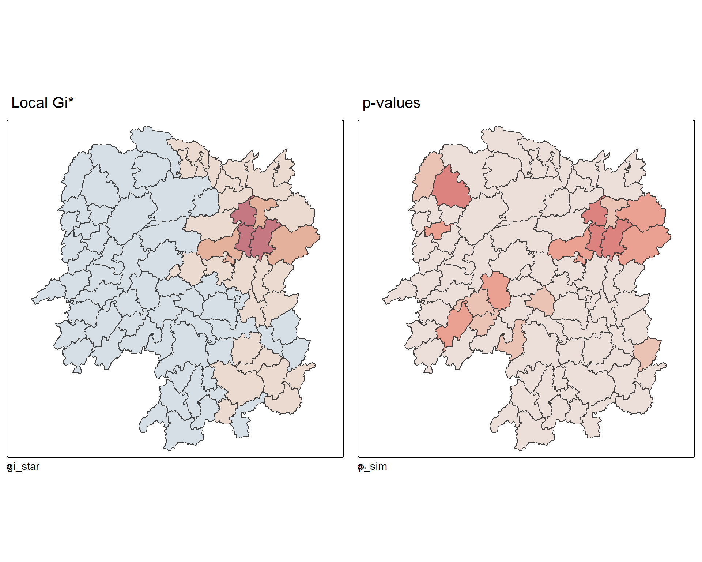
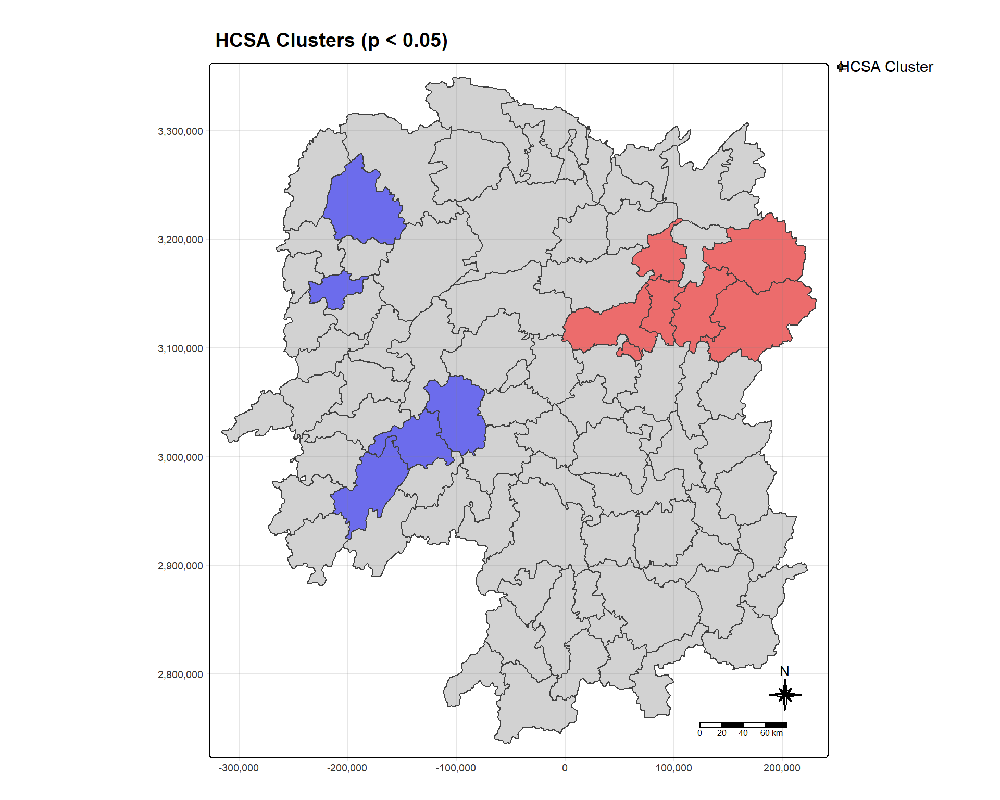

pacman::p_load(sf, sfdep, tmap, tidyverse, knitr)Hands-on Exercise 05b: Local Measures of Spatial Autocorrelation
1 Overview
Local Measures of Spatial Autocorrelation (LMSA) focus on the relationships between each observation and its surroundings, rather than providing a single summary of these relationships across the map. In this sense, they are not summary statistics but scores that allow us to learn more about the spatial structure in our data.
In this hands-on exercise, you will learn how to compute Local Measures of Spatial Autocorrelation (LMSA) by using sfdep package. By the end of this hands-on exercise, you will be able to:
- Import geospatial data using appropriate function(s) of sf package
- Import csv file using appropriate function of readr package
- Perform relational join using appropriate join function of dplyr package
- Compute Local Indicator of Spatial Association (LISA) statistics for detecting clusters and outliers by using appropriate functions of sfdep package
- Compute Getis-Ord’s Gi-statistics for detecting hot spot or/and cold spot area by using appropriate functions of sfdep package
- Visualise the analysis output by using tmap package
1.1 The Analytical Question
In spatial policy, one of the main development objectives of the local government and planners is to ensure equal distribution of development in the province. Our task in this study, hence, is to apply appropriate spatial statistical methods to discover if development is evenly distributed geographically.
If the answer is No, then our next question will be “is there sign of spatial clustering?”. And, if the answer for this question is yes, then our next question will be “where are these clusters?”
In this case study, we are interested to examine the spatial pattern of a selected development indicator (i.e. GDP per capita) of Hunan Province, People’s Republic of China.
1.2 The Study Area and Data
Two data sets will be used in this hands-on exercise:
- Hunan province administrative boundary layer at county level: This is a geospatial data set in ESRI shapefile format
- Hunan_2012.csv: This csv file contains selected Hunan’s local development indicators in 2012
2 Getting Started
2.1 Setting the Analytical Tools
Before we get started, we need to ensure that sf, sfdep, tmap and tidyverse packages are installed and loaded.
- sf is used for importing and handling geospatial data in R
- tidyverse is mainly used for wrangling attribute data in R
- sfdep will be used to compute spatial weights, global and local spatial autocorrelation statistics
- tmap will be used to prepare cartographic quality choropleth maps
3 Getting the Data Into R Environment
In this section, you will learn how to bring a geospatial data and its associated attribute table into R environment.
3.1 Import shapefile into R environment
The code chunk below uses st_read() of sf package to import Hunan shapefile into R. The imported shapefile will be simple features object of sf.
Show code
hunan <- st_read(dsn = "data/geospatial",
layer = "Hunan")Reading layer `Hunan' from data source
`C:\Users\HOPE\Desktop\ISSS626\Hands-on_Ex\Hands-on_ex05\data\geospatial'
using driver `ESRI Shapefile'
Simple feature collection with 88 features and 7 fields
Geometry type: POLYGON
Dimension: XY
Bounding box: xmin: 108.7831 ymin: 24.6342 xmax: 114.2544 ymax: 30.12812
Geodetic CRS: WGS 84Important: The raw data is in WGS 84 geographic coordinates system. For geospatial analysis, it is appropriate to use projected coordinates system. We will transform Hunan geospatial data from WGS 84 to UTM zone 50N (i.e. EPSG: 32650).
Show code
hunan <- st_transform(hunan, crs = 32650)
# Verify the transformation
st_crs(hunan)Coordinate Reference System:
User input: EPSG:32650
wkt:
PROJCRS["WGS 84 / UTM zone 50N",
BASEGEOGCRS["WGS 84",
ENSEMBLE["World Geodetic System 1984 ensemble",
MEMBER["World Geodetic System 1984 (Transit)"],
MEMBER["World Geodetic System 1984 (G730)"],
MEMBER["World Geodetic System 1984 (G873)"],
MEMBER["World Geodetic System 1984 (G1150)"],
MEMBER["World Geodetic System 1984 (G1674)"],
MEMBER["World Geodetic System 1984 (G1762)"],
MEMBER["World Geodetic System 1984 (G2139)"],
MEMBER["World Geodetic System 1984 (G2296)"],
ELLIPSOID["WGS 84",6378137,298.257223563,
LENGTHUNIT["metre",1]],
ENSEMBLEACCURACY[2.0]],
PRIMEM["Greenwich",0,
ANGLEUNIT["degree",0.0174532925199433]],
ID["EPSG",4326]],
CONVERSION["UTM zone 50N",
METHOD["Transverse Mercator",
ID["EPSG",9807]],
PARAMETER["Latitude of natural origin",0,
ANGLEUNIT["degree",0.0174532925199433],
ID["EPSG",8801]],
PARAMETER["Longitude of natural origin",117,
ANGLEUNIT["degree",0.0174532925199433],
ID["EPSG",8802]],
PARAMETER["Scale factor at natural origin",0.9996,
SCALEUNIT["unity",1],
ID["EPSG",8805]],
PARAMETER["False easting",500000,
LENGTHUNIT["metre",1],
ID["EPSG",8806]],
PARAMETER["False northing",0,
LENGTHUNIT["metre",1],
ID["EPSG",8807]]],
CS[Cartesian,2],
AXIS["(E)",east,
ORDER[1],
LENGTHUNIT["metre",1]],
AXIS["(N)",north,
ORDER[2],
LENGTHUNIT["metre",1]],
USAGE[
SCOPE["Navigation and medium accuracy spatial referencing."],
AREA["Between 114°E and 120°E, northern hemisphere between equator and 84°N, onshore and offshore. Brunei. China. Hong Kong. Indonesia. Malaysia - East Malaysia - Sarawak. Mongolia. Philippines. Russian Federation. Taiwan."],
BBOX[0,114,84,120]],
ID["EPSG",32650]]3.2 Import csv file into R environment
Next, we will import Hunan_2012.csv into R by using read_csv() of readr package.
Show code
hunan2012 <- read_csv("data/aspatial/Hunan_2012.csv", show_col_types = FALSE)
# Check the data structure
glimpse(hunan2012)Rows: 88
Columns: 29
$ County <chr> "Anhua", "Anren", "Anxiang", "Baojing", "Chaling", "Changn…
$ City <chr> "Yiyang", "Chenzhou", "Changde", "Hunan West", "Zhuzhou", …
$ avg_wage <dbl> 30544, 28058, 31935, 30843, 31251, 28518, 54540, 28597, 33…
$ deposite <dbl> 10967.0, 4598.9, 5517.2, 2250.0, 8241.4, 10860.0, 24332.0,…
$ FAI <dbl> 6831.7, 6386.1, 3541.0, 1005.4, 6508.4, 7920.0, 33624.0, 1…
$ Gov_Rev <dbl> 456.72, 220.57, 243.64, 192.59, 620.19, 769.86, 5350.00, 1…
$ Gov_Exp <dbl> 2703.0, 1454.7, 1779.5, 1379.1, 1947.0, 2631.6, 7885.5, 11…
$ GDP <dbl> 13225.0, 4941.2, 12482.0, 4087.9, 11585.0, 19886.0, 88009.…
$ GDPPC <dbl> 14567, 12761, 23667, 14563, 20078, 24418, 88656, 10132, 17…
$ GIO <dbl> 9276.90, 4189.20, 5108.90, 3623.50, 9157.70, 37392.00, 513…
$ Loan <dbl> 3954.90, 2555.30, 2806.90, 1253.70, 4287.40, 4242.80, 4053…
$ NIPCR <dbl> 3528.3, 3271.8, 7693.7, 4191.3, 3887.7, 9528.0, 17070.0, 3…
$ Bed <dbl> 2718, 970, 1931, 927, 1449, 3605, 3310, 582, 2170, 2179, 1…
$ Emp <dbl> 494.310, 290.820, 336.390, 195.170, 330.290, 548.610, 670.…
$ EmpR <dbl> 441.4, 255.4, 270.5, 145.6, 299.0, 415.1, 452.0, 127.6, 21…
$ EmpRT <dbl> 338.0, 99.4, 205.9, 116.4, 154.0, 273.7, 219.4, 94.4, 174.…
$ Pri_Stu <dbl> 54.175, 33.171, 19.584, 19.249, 33.906, 81.831, 59.151, 18…
$ Sec_Stu <dbl> 32.830, 17.505, 17.819, 11.831, 20.548, 44.485, 39.685, 7.…
$ Household <dbl> 290.4, 104.6, 148.1, 73.2, 148.7, 211.2, 300.3, 76.1, 139.…
$ Household_R <dbl> 234.5, 121.9, 135.4, 69.9, 139.4, 211.7, 248.4, 59.6, 110.…
$ NOIP <dbl> 101, 34, 53, 18, 106, 115, 214, 17, 55, 70, 44, 84, 74, 17…
$ Pop_R <dbl> 670.3, 243.2, 346.0, 184.1, 301.6, 448.2, 475.1, 189.6, 31…
$ RSCG <dbl> 5760.60, 2386.40, 3957.90, 768.04, 4009.50, 5220.40, 22604…
$ Pop_T <dbl> 910.8, 388.7, 528.3, 281.3, 578.4, 816.3, 998.6, 256.7, 45…
$ Agri <dbl> 4942.253, 2357.764, 4524.410, 1118.561, 3793.550, 6430.782…
$ Service <dbl> 5414.5, 3814.1, 14100.0, 541.8, 5444.0, 13074.6, 17726.6, …
$ Disp_Inc <dbl> 12373, 16072, 16610, 13455, 20461, 20868, 183252, 12379, 1…
$ RORP <dbl> 0.7359464, 0.6256753, 0.6549309, 0.6544614, 0.5214385, 0.5…
$ ROREmp <dbl> 0.8929619, 0.8782065, 0.8041262, 0.7460163, 0.9052651, 0.7…3.3 Performing relational join
The code chunk below will be used to update the attribute table of hunan’s sf data frame with the attribute fields of hunan2012 dataframe.
Show code
hunan <- left_join(hunan, hunan2012, by = c("County" = "County"))
# Check the result
glimpse(hunan)Rows: 88
Columns: 36
$ NAME_2 <chr> "Changde", "Changde", "Changde", "Changde", "Changde", "Ch…
$ ID_3 <int> 21098, 21100, 21101, 21102, 21103, 21104, 21109, 21110, 21…
$ NAME_3 <chr> "Anxiang", "Hanshou", "Jinshi", "Li", "Linli", "Shimen", "…
$ ENGTYPE_3 <chr> "County", "County", "County City", "County", "County", "Co…
$ Shape_Leng <dbl> 1.869074, 2.360691, 1.425620, 3.474325, 2.289506, 4.171918…
$ Shape_Area <dbl> 0.10056190, 0.19978745, 0.05302413, 0.18908121, 0.11450357…
$ County <chr> "Anxiang", "Hanshou", "Jinshi", "Li", "Linli", "Shimen", "…
$ City <chr> "Changde", "Changde", "Changde", "Changde", "Changde", "Ch…
$ avg_wage <dbl> 31935, 32265, 28692, 32541, 32667, 33261, 40446, 40744, 45…
$ deposite <dbl> 5517.2, 7979.0, 4581.7, 13487.0, 564.1, 8334.4, 21415.0, 1…
$ FAI <dbl> 3541.0, 8665.0, 4777.0, 16066.0, 7781.2, 10531.0, 43599.0,…
$ Gov_Rev <dbl> 243.64, 386.13, 373.31, 709.61, 336.86, 548.33, 2473.10, 2…
$ Gov_Exp <dbl> 1779.5, 2062.4, 1148.4, 2459.5, 1538.7, 2178.8, 4605.5, 48…
$ GDP <dbl> 12482.0, 15788.0, 8706.9, 20322.0, 10355.0, 16293.0, 81113…
$ GDPPC <dbl> 23667, 20981, 34592, 24473, 25554, 27137, 63118, 62202, 70…
$ GIO <dbl> 5108.9, 13491.0, 10935.0, 18402.0, 8214.0, 17795.0, 99254.…
$ Loan <dbl> 2806.90, 4550.00, 2242.00, 6748.00, 358.00, 6026.50, 23408…
$ NIPCR <dbl> 7693.7, 8269.9, 8169.9, 8377.0, 8143.1, 6156.0, 15719.0, 1…
$ Bed <dbl> 1931, 2560, 848, 2038, 1440, 2502, 6225, 4351, 1678, 970, …
$ Emp <dbl> 336.39, 456.78, 122.78, 513.44, 307.36, 392.05, 919.62, 85…
$ EmpR <dbl> 270.5, 388.8, 82.1, 426.8, 272.2, 329.6, 721.4, 757.6, 268…
$ EmpRT <dbl> 205.9, 246.7, 61.7, 227.1, 100.8, 193.8, 300.1, 318.3, 131…
$ Pri_Stu <dbl> 19.584, 42.097, 8.723, 38.975, 23.286, 29.245, 90.978, 80.…
$ Sec_Stu <dbl> 17.819, 33.029, 7.592, 33.938, 18.943, 26.104, 58.819, 68.…
$ Household <dbl> 148.1, 240.2, 81.9, 268.5, 129.1, 190.6, 374.8, 391.7, 161…
$ Household_R <dbl> 135.4, 208.7, 43.7, 256.0, 157.2, 184.7, 369.8, 369.6, 154…
$ NOIP <dbl> 53, 95, 77, 96, 99, 122, 733, 552, 314, 34, 14, 100, 67, 4…
$ Pop_R <dbl> 346.0, 553.2, 92.4, 539.7, 246.6, 399.2, 642.7, 655.5, 266…
$ RSCG <dbl> 3957.9, 4460.5, 3683.0, 7110.2, 3604.9, 6490.7, 16233.0, 1…
$ Pop_T <dbl> 528.3, 804.6, 251.8, 832.5, 409.3, 600.5, 1285.5, 1186.5, …
$ Agri <dbl> 4524.410, 6545.350, 2562.460, 7562.340, 3583.910, 5266.510…
$ Service <dbl> 14100.0, 17727.0, 7525.0, 53160.0, 7031.0, 6981.0, 26617.8…
$ Disp_Inc <dbl> 16610, 18925, 19498, 18985, 18604, 19275, 27345, 24020, 27…
$ RORP <dbl> 0.6549309, 0.6875466, 0.3669579, 0.6482883, 0.6024921, 0.6…
$ ROREmp <dbl> 0.8041262, 0.8511756, 0.6686757, 0.8312558, 0.8856065, 0.8…
$ geometry <POLYGON [m]> POLYGON ((22320.48 3301894,..., POLYGON ((35522.96…3.4 Visualising Regional Development Indicator
In the code chunks below, tmap functions are used to build two choropleth maps by using equal interval and quantile classification methods.
Show code
equal <- tm_shape(hunan) +
tm_fill("GDPPC",
n = 5,
style = "equal") +
tm_borders(alpha = 0.5) +
tm_layout(main.title = "Equal interval classification")
quantile <- tm_shape(hunan) +
tm_fill("GDPPC",
n = 5,
style = "quantile") +
tm_borders(alpha = 0.5) +
tm_layout(main.title = "Quantile classification")
tmap_arrange(equal,
quantile,
asp = 1,
ncol = 2)
Questions to consider: - Does the plot above reveal any outliers or clusters? - Does the plot above indicate the presence of hot spots or cold spots?
4 Local Indicators of Spatial Association (LISA)
Local Indicators of Spatial Association or LISA are statistics that evaluate the existence of clusters and/or outliers in the spatial arrangement of a given variable.
In this section, you will learn how to apply appropriate Local Indicators for Spatial Association (LISA), especially local Moran’s I to detect cluster and/or outlier from GDP per capita 2012 of Hunan Province, PRC.
4.1 Computing Contiguity Spatial Weights
Before we can compute the local spatial autocorrelation statistics, we need to construct a spatial weights of the study area.
In the code chunk below, st_contiguity() of sfdep package is used to compute contiguity weight matrices for the study area.
Show code
# Compute contiguity neighbours
nb <- st_contiguity(hunan)
# Calculate spatial weights (row-standardized)
wt <- st_weights(nb,
style = "W")
# Add to the sf data frame
hunan <- hunan %>%
mutate(nb = nb,
wt = wt,
.before = 1)To reveal the neighbour list, code chunk below is used:
Show code
summary(nb)Neighbour list object:
Number of regions: 88
Number of nonzero links: 448
Percentage nonzero weights: 5.785124
Average number of links: 5.090909
Link number distribution:
1 2 3 4 5 6 7 8 9 11
2 2 12 16 24 14 11 4 2 1
2 least connected regions:
30 65 with 1 link
1 most connected region:
85 with 11 linksThe summary report shows that: - There are 88 area units in Hunan - The most connected area unit has 11 neighbours - There are two area units with only one neighbour
4.2 Computing local Moran’s I
To compute local Moran’s I, the local_moran() function of sfdep will be used.
Show code
lisa <- hunan %>%
mutate(local_moran = local_moran(GDPPC, nb, wt),
.before = 1) %>%
unnest(local_moran)
# Check the structure
glimpse(lisa)Rows: 88
Columns: 50
$ ii <dbl> -1.468468e-03, 2.587817e-02, -1.198765e-02, 1.022468e-03,…
$ eii <dbl> -0.0027018573, 0.0017729527, -0.0149303475, 0.0001900152,…
$ var_ii <dbl> 5.007875e-04, 1.055268e-02, 1.162730e-01, 5.726521e-06, 1…
$ z_ii <dbl> 0.055115474, 0.234654935, 0.008629922, 0.347867652, 0.409…
$ p_ii <dbl> 0.9560464684, 0.8144765678, 0.9931144036, 0.7279395799, 0…
$ p_ii_sim <dbl> 0.948, 0.964, 0.808, 0.616, 0.580, 0.800, 0.040, 0.112, 0…
$ p_folded_sim <dbl> 0.474, 0.482, 0.404, 0.308, 0.290, 0.400, 0.020, 0.056, 0…
$ skewness <dbl> -0.8133442, -0.9131156, 1.3251876, 0.8996939, 1.1218756, …
$ kurtosis <dbl> 0.6483140, 0.7990201, 2.9340595, 0.3343128, 1.2932311, 0.…
$ mean <fct> Low-High, Low-Low, High-Low, High-High, High-High, High-L…
$ median <fct> High-High, High-High, High-High, High-High, High-High, Hi…
$ pysal <fct> Low-High, Low-Low, High-Low, High-High, High-High, High-L…
$ nb <nb> <2, 3, 4, 57, 85>, <1, 57, 58, 78, 85>, <1, 4, 5, 85>, <1,…
$ wt <list> <0.2, 0.2, 0.2, 0.2, 0.2>, <0.2, 0.2, 0.2, 0.2, 0.2>, <0…
$ NAME_2 <chr> "Changde", "Changde", "Changde", "Changde", "Changde", "C…
$ ID_3 <int> 21098, 21100, 21101, 21102, 21103, 21104, 21109, 21110, 2…
$ NAME_3 <chr> "Anxiang", "Hanshou", "Jinshi", "Li", "Linli", "Shimen", …
$ ENGTYPE_3 <chr> "County", "County", "County City", "County", "County", "C…
$ Shape_Leng <dbl> 1.869074, 2.360691, 1.425620, 3.474325, 2.289506, 4.17191…
$ Shape_Area <dbl> 0.10056190, 0.19978745, 0.05302413, 0.18908121, 0.1145035…
$ County <chr> "Anxiang", "Hanshou", "Jinshi", "Li", "Linli", "Shimen", …
$ City <chr> "Changde", "Changde", "Changde", "Changde", "Changde", "C…
$ avg_wage <dbl> 31935, 32265, 28692, 32541, 32667, 33261, 40446, 40744, 4…
$ deposite <dbl> 5517.2, 7979.0, 4581.7, 13487.0, 564.1, 8334.4, 21415.0, …
$ FAI <dbl> 3541.0, 8665.0, 4777.0, 16066.0, 7781.2, 10531.0, 43599.0…
$ Gov_Rev <dbl> 243.64, 386.13, 373.31, 709.61, 336.86, 548.33, 2473.10, …
$ Gov_Exp <dbl> 1779.5, 2062.4, 1148.4, 2459.5, 1538.7, 2178.8, 4605.5, 4…
$ GDP <dbl> 12482.0, 15788.0, 8706.9, 20322.0, 10355.0, 16293.0, 8111…
$ GDPPC <dbl> 23667, 20981, 34592, 24473, 25554, 27137, 63118, 62202, 7…
$ GIO <dbl> 5108.9, 13491.0, 10935.0, 18402.0, 8214.0, 17795.0, 99254…
$ Loan <dbl> 2806.90, 4550.00, 2242.00, 6748.00, 358.00, 6026.50, 2340…
$ NIPCR <dbl> 7693.7, 8269.9, 8169.9, 8377.0, 8143.1, 6156.0, 15719.0, …
$ Bed <dbl> 1931, 2560, 848, 2038, 1440, 2502, 6225, 4351, 1678, 970,…
$ Emp <dbl> 336.39, 456.78, 122.78, 513.44, 307.36, 392.05, 919.62, 8…
$ EmpR <dbl> 270.5, 388.8, 82.1, 426.8, 272.2, 329.6, 721.4, 757.6, 26…
$ EmpRT <dbl> 205.9, 246.7, 61.7, 227.1, 100.8, 193.8, 300.1, 318.3, 13…
$ Pri_Stu <dbl> 19.584, 42.097, 8.723, 38.975, 23.286, 29.245, 90.978, 80…
$ Sec_Stu <dbl> 17.819, 33.029, 7.592, 33.938, 18.943, 26.104, 58.819, 68…
$ Household <dbl> 148.1, 240.2, 81.9, 268.5, 129.1, 190.6, 374.8, 391.7, 16…
$ Household_R <dbl> 135.4, 208.7, 43.7, 256.0, 157.2, 184.7, 369.8, 369.6, 15…
$ NOIP <dbl> 53, 95, 77, 96, 99, 122, 733, 552, 314, 34, 14, 100, 67, …
$ Pop_R <dbl> 346.0, 553.2, 92.4, 539.7, 246.6, 399.2, 642.7, 655.5, 26…
$ RSCG <dbl> 3957.9, 4460.5, 3683.0, 7110.2, 3604.9, 6490.7, 16233.0, …
$ Pop_T <dbl> 528.3, 804.6, 251.8, 832.5, 409.3, 600.5, 1285.5, 1186.5,…
$ Agri <dbl> 4524.410, 6545.350, 2562.460, 7562.340, 3583.910, 5266.51…
$ Service <dbl> 14100.0, 17727.0, 7525.0, 53160.0, 7031.0, 6981.0, 26617.…
$ Disp_Inc <dbl> 16610, 18925, 19498, 18985, 18604, 19275, 27345, 24020, 2…
$ RORP <dbl> 0.6549309, 0.6875466, 0.3669579, 0.6482883, 0.6024921, 0.…
$ ROREmp <dbl> 0.8041262, 0.8511756, 0.6686757, 0.8312558, 0.8856065, 0.…
$ geometry <POLYGON [m]> POLYGON ((22320.48 3301894,..., POLYGON ((35522.9…The local_moran() function returns a data frame with the following columns: - ii: the local Moran’s I statistics - eii: the expectation of local moran statistic under the randomisation hypothesis - var_ii: the variance of local moran statistic under the randomisation hypothesis - z_ii: the standard deviate of local moran statistic - p_ii: the p-value of local moran statistic - mean: classification based on mean - median: classification based on median - pysal: classification following PySAL convention
4.3 Visualising local Moran’s I
4.3.1 Mapping local Moran’s I values
Using choropleth mapping functions of tmap package, we can plot the local Moran’s I values.
Show code
tm_shape(lisa) +
tm_fill("ii",
style = "pretty",
palette = "RdBu",
midpoint = NA) +
tm_borders(alpha = 0.5) +
tm_layout(main.title = "Local Moran's I of GDPPC",
main.title.size = 1.2,
main.title.fontface = "bold",
legend.height = 0.45,
legend.width = 0.35,
frame = TRUE) +
tm_compass(type = "8star", size = 2) +
tm_scale_bar() +
tm_grid(alpha = 0.2)
4.3.2 Mapping local Moran’s I p-values
The choropleth shows there is evidence for both positive and negative Ii values. However, it is useful to consider the p-values for each of these values.
Show code
tm_shape(lisa) +
tm_fill("p_ii",
breaks = c(0, 0.001, 0.01, 0.05, 0.1, 1),
palette = "-Reds",
title = "p-value") +
tm_borders(alpha = 0.5) +
tm_layout(main.title = "p-values of Local Moran's I",
main.title.size = 1.2,
main.title.fontface = "bold",
legend.height = 0.45,
legend.width = 0.35,
frame = TRUE) +
tm_compass(type = "8star", size = 2) +
tm_scale_bar() +
tm_grid(alpha = 0.2)
4.3.3 Mapping both local Moran’s I values and p-values
For effective interpretation, it is better to plot both the local Moran’s I values map and its corresponding p-values map next to each other.
Show code
ii_map <- tm_shape(lisa) +
tm_fill("ii",
style = "pretty",
n = 5,
palette = "RdBu") +
tm_borders(alpha = 0.5) +
tm_layout(main.title = "Local Moran's I of GDPPC",
legend.height = 0.45,
legend.width = 0.35,
frame = TRUE)
p_ii_map <- tm_shape(lisa) +
tm_fill("p_ii",
breaks = c(0, 0.001, 0.01, 0.05, 0.1, 1),
palette = "-Reds") +
tm_borders(alpha = 0.5) +
tm_layout(main.title = "p-values of Local Moran's I",
legend.height = 0.45,
legend.width = 0.35,
frame = TRUE)
tmap_arrange(ii_map, p_ii_map, asp = 1, ncol = 2)
4.4 Preparing and Visualising LISA Map
4.4.1 Plotting Moran scatterplot
A Moran Scatterplot is a graphical tool that visualizes the relationship between a variable’s values and the average values of its neighboring locations (spatial lag).
First, we need to calculate the spatial lag of GDPPC:
Show code
lisa <- lisa %>%
mutate(lag_GDPPC = st_lag(GDPPC, nb, wt),
.before = 1)Now, plot the Moran Scatterplot:
Show code
ggplot(data = lisa,
aes(x = GDPPC,
y = lag_GDPPC)) +
geom_point() +
geom_smooth(method = "lm",
se = FALSE,
color = "red") +
labs(x = "GDPPC",
y = "Spatial Lag of GDPPC",
title = "Moran Scatterplot") +
theme_minimal()
To make the plot more intuitive, we can color-code by LISA quadrants:
Show code
ggplot(data = lisa,
aes(x = GDPPC,
y = lag_GDPPC,
color = mean)) +
geom_point(size = 2) +
geom_smooth(method = "lm",
se = FALSE,
color = "black") +
geom_hline(yintercept = mean(lisa$lag_GDPPC), lty = 2) +
geom_vline(xintercept = mean(lisa$GDPPC), lty = 2) +
scale_color_manual(
values = c("High-High" = "red",
"Low-Low" = "blue",
"Low-High" = "lightblue",
"High-Low" = "pink")) +
labs(x = "GDPPC",
y = "Spatial Lag of GDPPC",
title = "Moran Scatterplot with LISA Quadrants") +
theme_minimal()
4.4.2 Plotting Moran scatterplot with standardised variable
First we will use scale() to center and scale the variable:
Show code
lisa <- lisa %>%
mutate(z_GDPPC = as.vector(scale(GDPPC)),
z_lag_GDPPC = as.vector(scale(lag_GDPPC)),
.before = 1)Now, plot the standardised Moran scatterplot:
Show code
ggplot(data = lisa,
aes(x = z_GDPPC,
y = z_lag_GDPPC,
color = mean)) +
geom_point(size = 2) +
geom_smooth(method = "lm",
se = FALSE,
color = "black") +
geom_hline(yintercept = 0, lty = 2) +
geom_vline(xintercept = 0, lty = 2) +
scale_color_manual(
values = c("High-High" = "red",
"Low-Low" = "blue",
"Low-High" = "lightblue",
"High-Low" = "pink")) +
labs(x = "Standardised GDPPC",
y = "Standardised Spatial Lag of GDPPC",
title = "Standardised Moran Scatterplot with LISA Quadrants") +
theme_minimal()
4.4.3 Preparing LISA cluster map
Now we will prepare a LISA cluster map. First, we need to create a categorical variable for LISA clusters:
Show code
lisa <- lisa %>%
mutate(LISA_cluster = case_when(
p_ii > 0.05 ~ "Insignificant",
mean == "High-High" ~ "High-High",
mean == "Low-Low" ~ "Low-Low",
mean == "Low-High" ~ "Low-High",
mean == "High-Low" ~ "High-Low",
TRUE ~ "Other"
),
LISA_cluster = factor(
LISA_cluster,
levels = c("Insignificant", "High-High", "Low-Low",
"Low-High", "High-Low")
))
# Check the distribution
table(lisa$LISA_cluster)
Insignificant High-High Low-Low Low-High High-Low
79 7 1 1 0 4.4.4 Plotting LISA map
Now, we can plot the LISA map:
Show code
lisa_map <- tm_shape(lisa) +
tm_polygons(
"LISA_cluster",
palette = c("grey80", # Insignificant
"red", # High-High
"blue", # Low-Low
"lightblue", # Low-High
"pink"), # High-Low
title = "LISA Cluster") +
tm_borders(alpha = 0.5) +
tm_layout(main.title = "LISA Cluster Map (p < 0.05)",
main.title.size = 1.2,
main.title.fontface = "bold",
legend.height = 0.45,
legend.width = 0.35,
frame = TRUE) +
tm_compass(type = "8star", size = 2) +
tm_scale_bar() +
tm_grid(alpha = 0.2)
lisa_map
For comprehensive visualization, we can combine all LISA-related maps:
Show code
tmap_arrange(ii_map, p_ii_map, lisa_map, asp = 1, ncol = 2)
4.4.5 Statistical Observations from LISA Map
The LISA map reveals: - High-High clusters (Hot spots): Areas of high GDPPC surrounded by high GDPPC neighbors - Low-Low clusters (Cold spots): Areas of low GDPPC surrounded by low GDPPC neighbors - Low-High outliers: Low GDPPC areas surrounded by high GDPPC neighbors - High-Low outliers: High GDPPC areas surrounded by low GDPPC neighbors - Insignificant areas: No significant local spatial autocorrelation
5 Hot Spots and Cold Spots Analysis (HCSA)
Hot spots and cold spots analysis is a technique used in spatial statistics to identify statistically significant clusters of high values (hot spots) and low values (cold spots).
HCSA uses the Getis-Ord Gi* statistic to determine if the observed clustering is statistically significant.
5.1 Deriving distance weight matrix
For Getis-Ord Gi* statistics, we define neighbours based on distance.
5.1.1 Determine the cut-off distance
First, we need to determine the upper limit for distance band:
Show code
# Get geometry
geo <- st_geometry(hunan)
# Compute centroid
co <- st_centroid(geo)
# Determine the cutoff distance
k1 <- sfdep::st_knn(co, k = 1)
k1_dist <- sfdep::st_nb_dists(co, k1)
# Summary of distances
summary(unlist(k1_dist)) Min. 1st Qu. Median Mean 3rd Qu. Max.
24845 32677 38110 38998 44639 58635 The summary report shows that the largest first nearest neighbour distance is about 61.8 km, so using this as the upper threshold gives certainty that all units will have at least one neighbour.
5.1.2 Computing fixed distance weights
Using the critical threshold value computed above, we compute the fixed distance weight:
Show code
# Compute fixed distance neighbors (using 62km as threshold)
wm_fd <- st_dist_band(co,
upper = 62000) # Note: using meters since we're in UTM
# Important: Include self for Gi* statistics
wm_fd <- include_self(wm_fd)
# Compute weights
wm_fd_weights <- st_weights(wm_fd)
# Check summary
summary(wm_fd)Neighbour list object:
Number of regions: 88
Number of nonzero links: 406
Percentage nonzero weights: 5.242769
Average number of links: 4.613636
Link number distribution:
2 3 4 5 6 7
7 14 15 28 18 6
7 least connected regions:
6 15 30 32 56 65 85 with 2 links
6 most connected regions:
21 28 45 50 52 82 with 7 links5.1.3 Computing adaptive distance weights
It is possible to control the numbers of neighbours directly using k-nearest neighbours:
Show code
# Compute k-nearest neighbors (k=8)
wm_ad <- st_knn(co, k = 8)
# Include self for Gi* statistics
wm_ad <- include_self(wm_ad)
# Compute weights
wm_ad_weights <- st_weights(wm_ad)
# Check summary
summary(wm_ad)Neighbour list object:
Number of regions: 88
Number of nonzero links: 792
Percentage nonzero weights: 10.22727
Average number of links: 9
Non-symmetric neighbours list
Link number distribution:
9
88
88 least connected regions:
1 2 3 4 5 6 7 8 9 10 11 12 13 14 15 16 17 18 19 20 21 22 23 24 25 26 27 28 29 30 31 32 33 34 35 36 37 38 39 40 41 42 43 44 45 46 47 48 49 50 51 52 53 54 55 56 57 58 59 60 61 62 63 64 65 66 67 68 69 70 71 72 73 74 75 76 77 78 79 80 81 82 83 84 85 86 87 88 with 9 links
88 most connected regions:
1 2 3 4 5 6 7 8 9 10 11 12 13 14 15 16 17 18 19 20 21 22 23 24 25 26 27 28 29 30 31 32 33 34 35 36 37 38 39 40 41 42 43 44 45 46 47 48 49 50 51 52 53 54 55 56 57 58 59 60 61 62 63 64 65 66 67 68 69 70 71 72 73 74 75 76 77 78 79 80 81 82 83 84 85 86 87 88 with 9 links5.2 Computing local Gi* statistics
5.2.1 Using fixed distance weights
Show code
HCSA_fdw <- hunan %>%
mutate(local_Gi = local_gstar_perm(GDPPC,
wm_fd,
wm_fd_weights,
nsim = 999),
.before = 1) %>%
unnest(local_Gi)
# Check the results
glimpse(HCSA_fdw)Rows: 88
Columns: 48
$ gi_star <dbl> 0.38306332, -0.34046184, 0.23257243, 0.36406563, 0.364065…
$ cluster <fct> Low, Low, High, High, High, High, High, High, High, Low, …
$ e_gi <dbl> 0.011339108, 0.011027381, 0.012269291, 0.011214019, 0.011…
$ var_gi <dbl> 6.697235e-06, 7.256003e-06, 7.869864e-06, 8.942393e-06, 9…
$ std_dev <dbl> 0.416745448, -0.258434688, -0.071440076, 0.465262403, 0.3…
$ p_value <dbl> 6.768646e-01, 7.960714e-01, 9.430475e-01, 6.417436e-01, 7…
$ p_sim <dbl> 0.604, 0.974, 0.868, 0.490, 0.584, 0.926, 0.042, 0.030, 0…
$ p_folded_sim <dbl> 0.302, 0.487, 0.434, 0.245, 0.292, 0.458, 0.021, 0.015, 0…
$ skewness <dbl> 0.8481757, 1.0644657, 1.0778753, 1.5204125, 1.1792646, 2.…
$ kurtosis <dbl> 0.2765997, 1.2755026, 1.2244340, 4.2130765, 1.6694175, 4.…
$ nb <nb> <2, 3, 4, 57, 85>, <1, 57, 58, 78, 85>, <1, 4, 5, 85>, <1,…
$ wt <list> <0.2, 0.2, 0.2, 0.2, 0.2>, <0.2, 0.2, 0.2, 0.2, 0.2>, <0…
$ NAME_2 <chr> "Changde", "Changde", "Changde", "Changde", "Changde", "C…
$ ID_3 <int> 21098, 21100, 21101, 21102, 21103, 21104, 21109, 21110, 2…
$ NAME_3 <chr> "Anxiang", "Hanshou", "Jinshi", "Li", "Linli", "Shimen", …
$ ENGTYPE_3 <chr> "County", "County", "County City", "County", "County", "C…
$ Shape_Leng <dbl> 1.869074, 2.360691, 1.425620, 3.474325, 2.289506, 4.17191…
$ Shape_Area <dbl> 0.10056190, 0.19978745, 0.05302413, 0.18908121, 0.1145035…
$ County <chr> "Anxiang", "Hanshou", "Jinshi", "Li", "Linli", "Shimen", …
$ City <chr> "Changde", "Changde", "Changde", "Changde", "Changde", "C…
$ avg_wage <dbl> 31935, 32265, 28692, 32541, 32667, 33261, 40446, 40744, 4…
$ deposite <dbl> 5517.2, 7979.0, 4581.7, 13487.0, 564.1, 8334.4, 21415.0, …
$ FAI <dbl> 3541.0, 8665.0, 4777.0, 16066.0, 7781.2, 10531.0, 43599.0…
$ Gov_Rev <dbl> 243.64, 386.13, 373.31, 709.61, 336.86, 548.33, 2473.10, …
$ Gov_Exp <dbl> 1779.5, 2062.4, 1148.4, 2459.5, 1538.7, 2178.8, 4605.5, 4…
$ GDP <dbl> 12482.0, 15788.0, 8706.9, 20322.0, 10355.0, 16293.0, 8111…
$ GDPPC <dbl> 23667, 20981, 34592, 24473, 25554, 27137, 63118, 62202, 7…
$ GIO <dbl> 5108.9, 13491.0, 10935.0, 18402.0, 8214.0, 17795.0, 99254…
$ Loan <dbl> 2806.90, 4550.00, 2242.00, 6748.00, 358.00, 6026.50, 2340…
$ NIPCR <dbl> 7693.7, 8269.9, 8169.9, 8377.0, 8143.1, 6156.0, 15719.0, …
$ Bed <dbl> 1931, 2560, 848, 2038, 1440, 2502, 6225, 4351, 1678, 970,…
$ Emp <dbl> 336.39, 456.78, 122.78, 513.44, 307.36, 392.05, 919.62, 8…
$ EmpR <dbl> 270.5, 388.8, 82.1, 426.8, 272.2, 329.6, 721.4, 757.6, 26…
$ EmpRT <dbl> 205.9, 246.7, 61.7, 227.1, 100.8, 193.8, 300.1, 318.3, 13…
$ Pri_Stu <dbl> 19.584, 42.097, 8.723, 38.975, 23.286, 29.245, 90.978, 80…
$ Sec_Stu <dbl> 17.819, 33.029, 7.592, 33.938, 18.943, 26.104, 58.819, 68…
$ Household <dbl> 148.1, 240.2, 81.9, 268.5, 129.1, 190.6, 374.8, 391.7, 16…
$ Household_R <dbl> 135.4, 208.7, 43.7, 256.0, 157.2, 184.7, 369.8, 369.6, 15…
$ NOIP <dbl> 53, 95, 77, 96, 99, 122, 733, 552, 314, 34, 14, 100, 67, …
$ Pop_R <dbl> 346.0, 553.2, 92.4, 539.7, 246.6, 399.2, 642.7, 655.5, 26…
$ RSCG <dbl> 3957.9, 4460.5, 3683.0, 7110.2, 3604.9, 6490.7, 16233.0, …
$ Pop_T <dbl> 528.3, 804.6, 251.8, 832.5, 409.3, 600.5, 1285.5, 1186.5,…
$ Agri <dbl> 4524.410, 6545.350, 2562.460, 7562.340, 3583.910, 5266.51…
$ Service <dbl> 14100.0, 17727.0, 7525.0, 53160.0, 7031.0, 6981.0, 26617.…
$ Disp_Inc <dbl> 16610, 18925, 19498, 18985, 18604, 19275, 27345, 24020, 2…
$ RORP <dbl> 0.6549309, 0.6875466, 0.3669579, 0.6482883, 0.6024921, 0.…
$ ROREmp <dbl> 0.8041262, 0.8511756, 0.6686757, 0.8312558, 0.8856065, 0.…
$ geometry <POLYGON [m]> POLYGON ((22320.48 3301894,..., POLYGON ((35522.9…5.2.2 Using adaptive distance weights
Show code
HCSA_adw <- hunan %>%
mutate(local_Gi = local_gstar_perm(GDPPC,
wm_ad,
wm_ad_weights,
nsim = 999),
.before = 1) %>%
unnest(local_Gi)
# Check the results
glimpse(HCSA_adw)Rows: 88
Columns: 48
$ gi_star <dbl> 0.24600226, 0.21329499, 0.24600226, 0.21343577, -0.007866…
$ cluster <fct> Low, Low, High, High, High, High, High, High, High, Low, …
$ e_gi <dbl> 0.01138771, 0.01117602, 0.01177925, 0.01137258, 0.0114014…
$ var_gi <dbl> 4.781272e-06, 4.769421e-06, 4.675849e-06, 5.129451e-06, 5…
$ std_dev <dbl> 0.23706627, 0.30126824, 0.05865463, 0.20385196, -0.024441…
$ p_value <dbl> 8.126054e-01, 7.632100e-01, 9.532272e-01, 8.384692e-01, 9…
$ p_sim <dbl> 0.740, 0.734, 0.870, 0.730, 0.906, 0.752, 0.004, 0.086, 0…
$ p_folded_sim <dbl> 0.370, 0.367, 0.435, 0.365, 0.453, 0.376, 0.002, 0.043, 0…
$ skewness <dbl> 0.7006805, 0.5965757, 0.4989010, 0.7721328, 0.7640795, 0.…
$ kurtosis <dbl> 0.68998634, 0.25044971, -0.30885563, 0.68579425, 0.457197…
$ nb <nb> <2, 3, 4, 57, 85>, <1, 57, 58, 78, 85>, <1, 4, 5, 85>, <1,…
$ wt <list> <0.2, 0.2, 0.2, 0.2, 0.2>, <0.2, 0.2, 0.2, 0.2, 0.2>, <0…
$ NAME_2 <chr> "Changde", "Changde", "Changde", "Changde", "Changde", "C…
$ ID_3 <int> 21098, 21100, 21101, 21102, 21103, 21104, 21109, 21110, 2…
$ NAME_3 <chr> "Anxiang", "Hanshou", "Jinshi", "Li", "Linli", "Shimen", …
$ ENGTYPE_3 <chr> "County", "County", "County City", "County", "County", "C…
$ Shape_Leng <dbl> 1.869074, 2.360691, 1.425620, 3.474325, 2.289506, 4.17191…
$ Shape_Area <dbl> 0.10056190, 0.19978745, 0.05302413, 0.18908121, 0.1145035…
$ County <chr> "Anxiang", "Hanshou", "Jinshi", "Li", "Linli", "Shimen", …
$ City <chr> "Changde", "Changde", "Changde", "Changde", "Changde", "C…
$ avg_wage <dbl> 31935, 32265, 28692, 32541, 32667, 33261, 40446, 40744, 4…
$ deposite <dbl> 5517.2, 7979.0, 4581.7, 13487.0, 564.1, 8334.4, 21415.0, …
$ FAI <dbl> 3541.0, 8665.0, 4777.0, 16066.0, 7781.2, 10531.0, 43599.0…
$ Gov_Rev <dbl> 243.64, 386.13, 373.31, 709.61, 336.86, 548.33, 2473.10, …
$ Gov_Exp <dbl> 1779.5, 2062.4, 1148.4, 2459.5, 1538.7, 2178.8, 4605.5, 4…
$ GDP <dbl> 12482.0, 15788.0, 8706.9, 20322.0, 10355.0, 16293.0, 8111…
$ GDPPC <dbl> 23667, 20981, 34592, 24473, 25554, 27137, 63118, 62202, 7…
$ GIO <dbl> 5108.9, 13491.0, 10935.0, 18402.0, 8214.0, 17795.0, 99254…
$ Loan <dbl> 2806.90, 4550.00, 2242.00, 6748.00, 358.00, 6026.50, 2340…
$ NIPCR <dbl> 7693.7, 8269.9, 8169.9, 8377.0, 8143.1, 6156.0, 15719.0, …
$ Bed <dbl> 1931, 2560, 848, 2038, 1440, 2502, 6225, 4351, 1678, 970,…
$ Emp <dbl> 336.39, 456.78, 122.78, 513.44, 307.36, 392.05, 919.62, 8…
$ EmpR <dbl> 270.5, 388.8, 82.1, 426.8, 272.2, 329.6, 721.4, 757.6, 26…
$ EmpRT <dbl> 205.9, 246.7, 61.7, 227.1, 100.8, 193.8, 300.1, 318.3, 13…
$ Pri_Stu <dbl> 19.584, 42.097, 8.723, 38.975, 23.286, 29.245, 90.978, 80…
$ Sec_Stu <dbl> 17.819, 33.029, 7.592, 33.938, 18.943, 26.104, 58.819, 68…
$ Household <dbl> 148.1, 240.2, 81.9, 268.5, 129.1, 190.6, 374.8, 391.7, 16…
$ Household_R <dbl> 135.4, 208.7, 43.7, 256.0, 157.2, 184.7, 369.8, 369.6, 15…
$ NOIP <dbl> 53, 95, 77, 96, 99, 122, 733, 552, 314, 34, 14, 100, 67, …
$ Pop_R <dbl> 346.0, 553.2, 92.4, 539.7, 246.6, 399.2, 642.7, 655.5, 26…
$ RSCG <dbl> 3957.9, 4460.5, 3683.0, 7110.2, 3604.9, 6490.7, 16233.0, …
$ Pop_T <dbl> 528.3, 804.6, 251.8, 832.5, 409.3, 600.5, 1285.5, 1186.5,…
$ Agri <dbl> 4524.410, 6545.350, 2562.460, 7562.340, 3583.910, 5266.51…
$ Service <dbl> 14100.0, 17727.0, 7525.0, 53160.0, 7031.0, 6981.0, 26617.…
$ Disp_Inc <dbl> 16610, 18925, 19498, 18985, 18604, 19275, 27345, 24020, 2…
$ RORP <dbl> 0.6549309, 0.6875466, 0.3669579, 0.6482883, 0.6024921, 0.…
$ ROREmp <dbl> 0.8041262, 0.8511756, 0.6686757, 0.8312558, 0.8856065, 0.…
$ geometry <POLYGON [m]> POLYGON ((22320.48 3301894,..., POLYGON ((35522.9…5.3 Visualising HCSA
5.3.1 Mapping Gi* with fixed distance weights
Show code
tm_shape(HCSA_fdw) +
tm_fill("gi_star",
style = "pretty",
palette = "-RdBu",
midpoint = NA) +
tm_borders(alpha = 0.5) +
tm_layout(main.title = "Local Gi* of GDPPC (Fixed Distance)",
main.title.size = 1.2,
main.title.fontface = "bold",
legend.height = 0.45,
legend.width = 0.35,
frame = TRUE) +
tm_compass(type = "8star", size = 2) +
tm_scale_bar() +
tm_grid(alpha = 0.2)
5.3.2 Mapping local Gi* p-values
Show code
tm_shape(HCSA_fdw) +
tm_fill("p_sim",
breaks = c(0, 0.001, 0.01, 0.05, 0.1, 1),
palette = "-Reds",
title = "p-value") +
tm_borders(alpha = 0.5) +
tm_layout(main.title = "p-values of Local Gi* (Fixed Distance)",
main.title.size = 1.2,
main.title.fontface = "bold",
legend.height = 0.45,
legend.width = 0.35,
frame = TRUE) +
tm_compass(type = "8star", size = 2) +
tm_scale_bar() +
tm_grid(alpha = 0.2)
5.3.3 Mapping both Gi* values and p-values
Show code
Gi_star_map <- tm_shape(HCSA_fdw) +
tm_fill("gi_star",
style = "pretty",
n = 5,
palette = "-RdBu") +
tm_borders(alpha = 0.5) +
tm_layout(main.title = "Local Gi*",
legend.height = 0.45,
legend.width = 0.35,
frame = TRUE)
p_values_map <- tm_shape(HCSA_fdw) +
tm_fill("p_sim",
breaks = c(0, 0.001, 0.01, 0.05, 0.1, 1),
palette = "-Reds") +
tm_borders(alpha = 0.5) +
tm_layout(main.title = "p-values",
legend.height = 0.45,
legend.width = 0.35,
frame = TRUE)
tmap_arrange(Gi_star_map, p_values_map, asp = 1, ncol = 2)
5.3.4 Preparing and plotting HCSA Map
Create a categorical variable for HCSA clusters:
Show code
HCSA_fdw <- HCSA_fdw %>%
mutate(HCSA_cluster = case_when(
p_sim > 0.05 ~ "Insignificant",
p_sim <= 0.05 & gi_star > 0 ~ "Hot spot",
p_sim <= 0.05 & gi_star < 0 ~ "Cold spot",
TRUE ~ "Other"
),
HCSA_cluster = factor(
HCSA_cluster,
levels = c("Insignificant", "Hot spot", "Cold spot")
))
# Check the distribution
table(HCSA_fdw$HCSA_cluster)
Insignificant Hot spot Cold spot
77 7 4 Now plot the HCSA map:
Show code
HCSA_map <- tm_shape(HCSA_fdw) +
tm_polygons(
"HCSA_cluster",
palette = c("grey80", # Insignificant
"red", # Hot spot
"blue"), # Cold spot
title = "HCSA Cluster") +
tm_borders(alpha = 0.5) +
tm_layout(main.title = "HCSA Clusters (p < 0.05)",
main.title.size = 1.2,
main.title.fontface = "bold",
legend.height = 0.45,
legend.width = 0.35,
frame = TRUE) +
tm_compass(type = "8star", size = 2) +
tm_scale_bar() +
tm_grid(alpha = 0.2)
HCSA_map
5.3.5 Combined visualization
Show code
tmap_arrange(Gi_star_map, HCSA_map, asp = 1, ncol = 2)
5.4 Comparison: Fixed vs Adaptive Distance Weights
Let’s compare the results from fixed and adaptive distance weights:
Show code
# Prepare HCSA clusters for adaptive weights
HCSA_adw <- HCSA_adw %>%
mutate(HCSA_cluster = case_when(
p_sim > 0.05 ~ "Insignificant",
p_sim <= 0.05 & gi_star > 0 ~ "Hot spot",
p_sim <= 0.05 & gi_star < 0 ~ "Cold spot",
TRUE ~ "Other"
),
HCSA_cluster = factor(
HCSA_cluster,
levels = c("Insignificant", "Hot spot", "Cold spot")
))Show code
HCSA_fixed <- tm_shape(HCSA_fdw) +
tm_polygons("HCSA_cluster",
palette = c("grey80", "red", "blue"),
title = "HCSA") +
tm_borders(alpha = 0.5) +
tm_layout(main.title = "Fixed Distance (62km)",
legend.height = 0.45,
legend.width = 0.35,
frame = TRUE)
HCSA_adaptive <- tm_shape(HCSA_adw) +
tm_polygons("HCSA_cluster",
palette = c("grey80", "red", "blue"),
title = "HCSA") +
tm_borders(alpha = 0.5) +
tm_layout(main.title = "Adaptive Distance (k=8)",
legend.height = 0.45,
legend.width = 0.35,
frame = TRUE)
tmap_arrange(HCSA_fixed, HCSA_adaptive, asp = 1, ncol = 2)
6 Summary
In this hands-on exercise, we have:
6.1 LISA Analysis Results
- Identified local clusters and outliers using Local Moran’s I:
- High-High clusters: Counties with high GDPPC surrounded by high GDPPC neighbors
- Low-Low clusters: Counties with low GDPPC surrounded by low GDPPC neighbors
- Spatial outliers: High-Low and Low-High patterns
- Visualized spatial relationships through:
- Moran scatterplots showing the relationship between values and their spatial lags
- LISA cluster maps highlighting significant local patterns
6.2 HCSA Analysis Results
- Detected hot spots and cold spots using Getis-Ord Gi* statistics:
- Hot spots: Significant clusters of high GDPPC values
- Cold spots: Significant clusters of low GDPPC values
- Compared different spatial weight schemes:
- Fixed distance weights (62km threshold)
- Adaptive distance weights (k=8 nearest neighbors)
6.3 Key Findings
- Economic development in Hunan Province shows clear spatial clustering
- Hot spots (high GDPPC clusters) are concentrated in specific regions
- Cold spots (low GDPPC clusters) indicate areas needing development attention
- The choice of spatial weights (fixed vs adaptive) can influence the detection of clusters
These local measures complement the global measures from Exercise 05a by showing where the spatial clustering occurs, providing actionable insights for policy makers and planners.